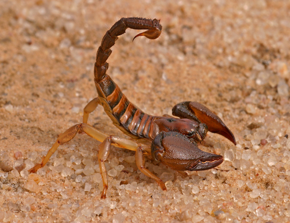
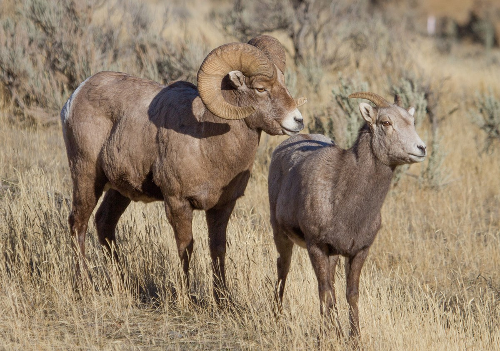

Welcome to the Blog!

Next Summer Booking Open Now
Make sure to reserve your date now, we have limited runs on each river and they go fast. If you have only certain dates that you can get away you should book now.

Highlights from the past season
What an incredible season we have had. We celebrated our 50th year of running trips down the Grand Canyon. This year we ran 36 trips down the Grand Canyon introducing over 800 people to one of our favorite places on earth. We trained 4 new guides and welcomed them to our family. The season started off with some chilly weather in the early season, but our guests braved the cold and loved every minute of their trip. Later the temperatures soared reaching highs of 120 F in the Grand canyon and 95 on the Salmon. We didn't have any trouble getting people in the water at those temperatures.
Encounters in the Wild
 Scorpions: They spend the day hiding and crawl out at night to hunt. They will eat crickets, moths, spiders and other insects. Many compare their sting to an intense bee sting. Relief can be found with ice, aspirin and time. When in the canyon, pay attention to where you are walking at night. Always wear your shoes or sandals. Always have a light with you to see where you are going. Never try to capture a scorpion and if you get stung, see your guide immediately.
Big horn sheep: For many people, bighorn sheep symbolize the rugged mountain west. It is one of two species of wild sheep in North America. It's compact body is muscular with chocolate brown fur. Most weigh 160-250 lbs. They have exceptional vision, hearing and smell that helps them detect and avoid predators. Their large curved horns can weigh up to 30 lbs. Females also have horns, but they are short with a slight curvature. Horns are used as tools for eating and fighting. If you encounter a big horn sheep, don't agitate it. The park service asks that you stay 100 feet away from big game animals. Leave them enough room for escape if they feel threatened.